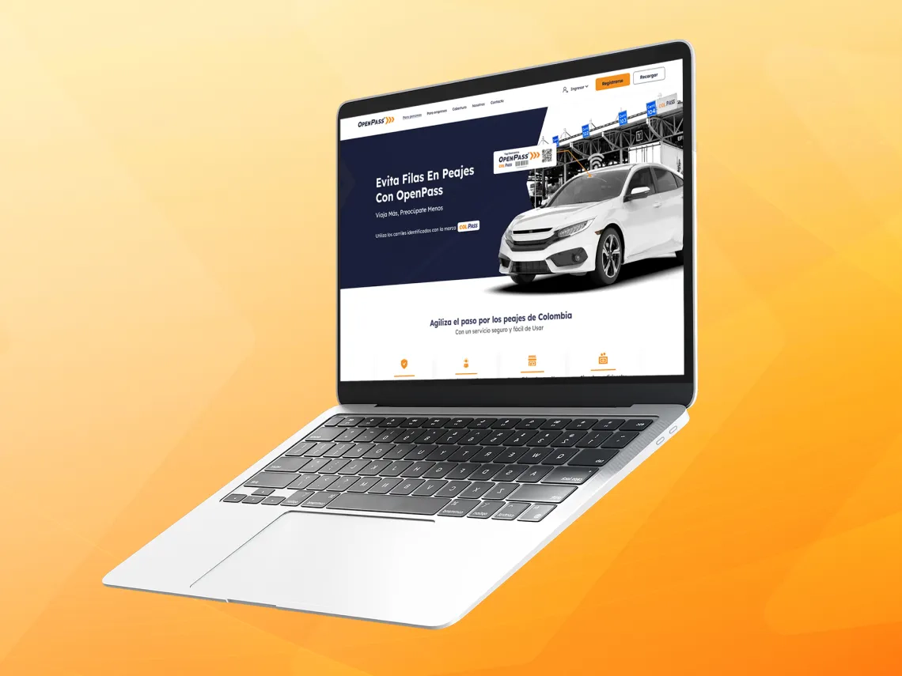

Rediseño del sitio web y la plataforma de OpenPass
¿Por qué?
Para facilitar la comprensión del tag electrónico, destacando sus beneficios de agilidad y comodidad en los peajes. También, para mejorar la usabilidad de la extranet, optimizar la experiencia de los usuarios y proyectar una imagen más profesional y confiable.
¿A quién va dirigido?
A usuarios particulares y empresas interesados en adquirir el tag de OpenPass para optimizar su paso por peajes. También, a quienes ya son usuarios, facilitándoles la administración de su cuenta y promoviendo una experiencia de uso más intuitiva y eficiente.
¿Cómo?
Reestructurando el contenido para comunicar de manera clara y efectiva, diseñando interfaces personalizadas para personas y empresas, modernizando la estética del sitio web y simplificando la funcionalidad de la extranet para agilizar tareas como recargar el tag y gestionar cuentas.
¿Mi rol?
Responsable del diseño visual de la interfaz de usuario (UI) y colaboración en la creación de userflows, mapas del sitio y wireframes iterativos, estableciendo una base sólida para el desarrollo de la UI final.